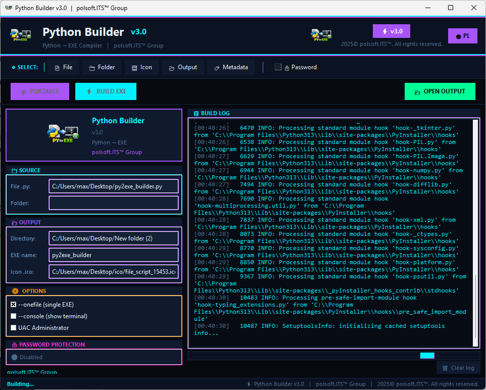

Profesjonalne narzędzie GUI do kompilacji skryptów Python (.py) w samodzielne pliki wykonywalne Windows (.exe) za pomocą jednego kliknięcia.

Wskaż swój główny plik .py do przetworzenia.
Dodaj ikonę, hasło lub wymuś uprawnienia Admina.
Odbierz gotowy plik EXE w folderze wyjściowym.
Pakuj wszystkie biblioteki i zależności w jeden, przenośny plik .exe. Użytkownik końcowy nie musi mieć zainstalowanego Pythona.
Zintegrowane wsparcie dla User Account Control. Twórz aplikacje, które automatycznie proszą o uprawnienia administratora.
Z łatwością osadzaj pliki .ico, aby Twoja aplikacja wyglądała profesjonalnie i była rozpoznawalna w systemie.
Możliwość zabezpieczenia procesu kompilacji hasłem (SHA-256), zwiększając bezpieczeństwo Twojego rozwiązania.
Interfejs GUI pozostaje responsywny podczas procesu budowania dzięki asynchronicznemu przetwarzaniu w tle.
Opcja "Windowed" pozwala na ukrycie czarnego okna terminala dla aplikacji z graficznym interfejsem użytkownika.